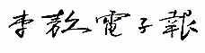

|  | ||||
|
||||
1999/11/01
李敖電子報發刊詞
正告雷建容小姐
給胖妹建議
兩個簽名換一個簽名
會計心態
第一流的修辭境界
1999/11/02
「本身著作」不除外
幸福不在遠方
我的道歉，男女有別
李登輝又一次的不要臉
逃兵在罵逃兵
女子無陰毛者
國民黨新聞局長最怕陰毛
台灣是白虎星
李敖的「陰毛」
1999/11/03
宋美齡偷洋人養洋漢
宋美齡要用原子彈炸大陸
余光中的假詩境
「單向直航」去你娘
「單向直航」有四種
1999/11/04
剁腳筋的民主政治
掩目盜名
「心靈捕手」vs.「洋屌捕手」
洗腦與洗腎
既全倒，也半倒
1999/11/05
我最難忘的一位政治家
宋楚瑜「特務治國」力有未逮
逃兵有兩種
代老美抗議
評改余光中的「無論」
1999/11/08
致唐飛的一封信
再改余光中的爛詩
1999/11/09
李敖：昔之「搗蛋鬼」、今之大師
四歲看大
難道你要我當年爬到他們床底下目擊嗎？
1999/11/10
從「以夷制夷」到「以夷制中國」 ——李登輝又發賤了！
發了賤，還想賴嗎？
沒有真情的詩人
充氣娃娃功德無量
1999/11/11
陳水扁抄人家七年前的
教科書學台北？
心裡只有一個他
1999/11/12
妖僧鬧雙胞
又一個貪天之功的
改人者人亦改之
台大短命、校長長壽
1999/11/15
小馬哥太天真了！
小馬哥與「城市外交」
小馬哥「城市外交」不成事
蕭條異代卻同時
1999/11/16
許信良論李敖來台五十年
建國黨捧李敖
陳水扁給李大哥的信
智仁勇和錢
1999/11/17
望梅不如尋梅
法官鄭堤升提升了我們
1999/11/18
章孝嚴「急流勇退」？
檢定知識分子的一個標準
李敖告劉泰英自訴狀
跋劉泰英的道歉信
1999/11/19
與謝聰敏通話結論
賣假雞巴、假屄無罪
矽膠娃娃太貴了
1999/11/22
我的原住民意見
論朱惠良被新黨開除
男女•經濟•壓
王曉波教授致敖哥
1999/11/23
給李慶華小哥的一封信
新黨與我
龍應台的無恥行為
「明捧李登輝，暗奪釣魚島」
1999/11/24
國民黨，105個屁！
婚是何物，直教生死相許
1999/11/25
小馬哥「一定在什麼地方弄錯了」
台奸—豈可輕予罪名！
1999/11/26
為「不求甚解」進一解
鄧小平論「一國兩制」
1999/11/29
阿扁心胸太狹窄了！
鄧小平論「一國兩制」（一續）
1999/11/30
憶黃信介
鄧小平論「一國兩制」（二續）
一九九九年十二月
1999/12/01
會錯了意，先表了情
我就不信什麼「人死為大」
鄧小平論「一國兩制」（三續）
1999/12/02
跋吳俊宏給李敖的信
鄧小平論「一國兩制」（四續）
1999/12/03
與山本勳論五十年
挑戰李敖不如反問自己
鄧小平論「一國兩制」（五續）
1999/12/06
為阿扁論李敖的談話進一解
你不知道的「一國兩制」（上）
1999/12/07
劉泰英出錢，劉家昌辦事
你不知道的「一國兩制」（下）
1999/12/08
李敖的最高境界
言論自由有三個重要條件
劉泰英秘密批示的文件
1999/12/09
呂秀蓮騙原住民
武器未開戰，單位先開戰
劉泰英秘密批示的文件（續完）
1999/12/10
不可誣衊敵人
來他媽的威爾鋼！
去他媽的二二八公園！
又見冥婚
拿到胡秋原第二次賠款
1999/12/13
今天教育的困境卡在哪裡？
徐淵濤「替李登輝卸妝」序
1999/12/14
劉兆玄、李遠哲學術迫害內幕
1999/12/15
兩張重要的照片
1999/12/16
回新聞局長趙怡老弟的一封信
附 趙怡來信全文
1999/12/17
原來劉泰英是宋系人馬！
請李敖救宋楚瑜
1999/12/20
趙怡局長的「德政」
Pubic 走向 Public
1999/12/21
鄧小平論「一國兩制」（續完）
1999/12/22
李登輝的婚外情
1999/12/23
劉源俊、張中訓、許清雲、葉海煙是四大可恥教授！
李登輝的婚外情（續完）
1999/12/24
郁慕明、趙少康豈可擁連！
雪柔給李敖的信
1999/12/27
難友李政一母喪題辭
登輝•牙醫•房事
1999/12/28
登輝•牙醫•房事（一續）
1999/12/29
魏廷朝死了
黃珊珊李敖通信
登輝•牙醫•房事（續完）
1999/12/30
答謝啟大
李登輝對宋楚瑜肝膽相照讚不絕口表
1999/12/31
諾貝爾文學獎候選人李敖簡介
二０００年一月
2000/01/03
李登輝的牙醫改名了
誰統一誰？
2000/01/04
高雄人缺了什麼？
2000/01/05
從蓮花中看花蓮
2000/01/06
怎樣處分國民黨黨產？
2000/01/07
「出賣台灣、買回大陸！」
2000/01/10
「出賣台灣，買回大陸！」（續完）
2000/01/11
新台南人與新鄭成功
2000/01/12
台中人，狼來了！
2000/01/13
誰騙了你和我
二十一世紀兩岸關係
2000/01/14
沒有愛情的文化
李敖與言論自由
2000/01/17
從「一國兩制」到和平統一
2000/01/18
「一個中國」正解
蕃薯藤網站總統候選人小檔案（李敖部分）
2000/01/19
「台灣之子」一開始就是謊話
2000/01/20
重刊「三個臭皮黨，諸葛怎樣想」
2000/01/21
筱蟬不寒蟬
2000/01/24
對台灣同胞的最後勸告
2000/01/25
對台灣同胞的最後勸告（一續）
2000/01/26
對台灣同胞的最後勸告（二續）
2000/01/27
對台灣同胞的最後勸告（續完）
2000/01/28
愛台灣不要走火入魔
2000/01/31
為戴高樂將軍「劍鋒」題辭
詩序蔡敏新作
二０００年二月
2000/02/01
庸醫殺人，良醫殺？
2000/02/02
別在中山了！
2000/02/03
台大人的第二命題
2000/02/10
有關「隨扈」的兩封信
不再被遺忘的大屠殺——1937南京浩劫
2000/02/11
李敖答民眾（校正本）
2000/02/14
李敖答民眾（校正本）-（一續）
2000/02/15
李敖答民眾（校正本）-（二續）
2000/02/16
李敖答民眾（校正本）-（續完）
誰是「文化總統」？
2000/02/17
我又公布了安全局秘件
2000/02/18
連戰連戰你瞎了眼
阿扁騙選票，敢說不敢做
2000/02/21
阿扁騙選票，敢說不敢做-（續完）
2000/02/22
陳水扁太可恥了！
質疑「台灣的主張」
2000/02/23
真敦化還是假敦化
2000/02/24
世新新不新
2000/02/25
大學教育的悲哀
2000/02/28
政治硬梆梆
呂秀蓮被逼供了嗎？
2000/02/29
「陳水扁的真面目」引言
二０００年三月
2000/03/01
聰明台灣人，檢驗候選人（校正本）—總統大選政見會李敖談話
2000/03/02
聰明台灣人，檢驗候選人（校正本）—總統大選政見會李敖談話-（續完）
陳水扁怎樣害營造商
陳水扁勇敢嗎？
2000/03/03
我們的未來在誰手堙H
2000/03/06
李敖的第三次義賣
新黨的前途，我們的前途
2000/03/07
新黨的前途，我們的前途-（續完）
真心愛台灣，莫鼓動戰爭（修正版）
2000/03/08
真心愛台灣，莫鼓動戰爭（修正版）-（一續）
2000/03/09
真心愛台灣，莫鼓動戰爭（修正版）-（續完）
連戰不可能走出李登輝路線
2000/03/10
連戰不可能走出李登輝路線-（續完）
2000/03/13
交大二０００怎麼走？
2000/03/14
李遠哲有兩個
改變台灣命運，要選對人（修正版）—總統大選政見會李敖談話
2000/03/15
改變台灣命運，要選對人（修正版）—總統大選政見會李敖談話（一續）
2000/03/16
改變台灣命運，要選對人（修正版）—總統大選政見會李敖談話（續完）
成功有兩種
2000/03/17
成功有兩種（續完）
從鄭板橋到板橋
2000/03/20
從鄭板橋到板橋（續完）
2000/03/21
今夕何夕知其所止
2000/03/22
李敖的四點書面談話
今夕何夕知其所止（續完）
2000/03/23
三重悲喜劇
2000/03/24
三重悲喜劇（續完）
2000/03/27
你不知道的陳府將軍
2000/03/28
你不知道的陳府將軍（續完）
2000/03/29
少年觀護所演講——活出你自己
2000/03/30
少年觀護所演講——活出你自己（續）
2000/03/31
少年觀護所演講——活出你自己（二續）
二０００年四月
2000/04/03
少年觀護所演講——活出你自己（三續）
2000/04/04
少年觀護所演講——活出你自己（四續）
2000/04/05
少年觀護所演講——活出你自己（續完）
陳水扁政見是謊話
2000/04/06
陳水扁政見是謊話（續）
2000/04/07
陳水扁政見是謊話（二續）
2000/04/10
陳水扁政見是謊話（續完）
2000/04/11
「北京法源寺」離諾貝爾文學獎還有多遠
2000/04/12
「北京法源寺」離諾貝爾文學獎還有多遠（續）
2000/04/13
「北京法源寺」離諾貝爾文學獎還有多遠（續完）
2000/04/14
女人與政治
2000/04/17
女人與政治（續）
2000/04/18
女人與政治（二續）
2000/04/19
女人與政治（三續）
2000/04/20
女人與政治（續完）
李遠哲怎樣謊報危樓？——細說中央研究院近美大樓弊案
2000/04/21
李遠哲怎樣謊報危樓？——細說中央研究院近美大樓弊案（續）
2000/04/24
李遠哲怎樣謊報危樓？——細說中央研究院近美大樓弊案（二續）
2000/04/25
李遠哲怎樣謊報危樓？——細說中央研究院近美大樓弊案（續完）
2000/04/26
從不忘記我每年生日的人
諾貝爾文學獎不是「戈多」——鐵窗禿筆贊法源 李敖坐入文學筐
2000/04/27
陳豐偉「網路不斷革命論」
2000/04/28
陳豐偉「網路不斷革命論」（續完）
二０００年五月
2000/05/01
「民進黨執政」？
一千年個屁！
不值得
2000/05/02
讀「讀『李敖快意恩仇錄』」
〔附錄〕讀「李敖快意恩仇錄」（楊照）
2000/05/03
讀「讀『李敖快意恩仇錄』」（續完）
2000/05/04
李遠哲怎樣謊報黑官？——細說中央研究院副院長弊案
2000/05/05
李遠哲怎樣謊報黑官？——細說中央研究院副院長弊案（續）
2000/05/08
李遠哲怎樣謊報黑官？——細說中央研究院副院長弊案（二續）
2000/05/09
李遠哲怎樣謊報黑官？——細說中央研究院副院長弊案（續完）
「陳文茜的虛擬人生」序
2000/05/10
「陳文茜的虛擬人生」序（續完）
2000/05/11
請勿亂評「蔣介石評傳」
【附錄一】「蔣介石評傳」序（汪榮祖）
2000/05/12
請勿亂評「蔣介石評傳」（續）
【附錄二】「蔣介石評傳」序（李敖）
2000/05/15
請勿亂評「蔣介石評傳」（續完）
【附錄二】「蔣介石評傳」序（李敖）
2000/05/16
替天行道，替新黨行道
2000/05/17
關於殷海光與李敖三文件
2000/05/18
關於殷海光與李敖三文件（續）
2000/05/19
關於殷海光與李敖三文件（續完）
2000/05/22
李敖收藏的「意淫圖」（一）
2000/05/23
李敖收藏的「意淫圖」（二）
2000/05/24
對李登輝瀆職等罪的刑事告發狀
【證一】李登輝「鴻禧山莊」貪污舞弊案調查報告（李敖•亓豐瑜）
2000/05/25
對李登輝瀆職等罪的刑事告發狀（續）
2000/05/26
對李登輝瀆職等罪的刑事告發狀（二續）
2000/05/29
對李登輝瀆職等罪的刑事告發狀（三續）
2000/05/30
對李登輝瀆職等罪的刑事告發狀（四續）
2000/05/31
對李登輝瀆職等罪的刑事告發狀（續完）
二０００年六月
2000/06/01
敬告金蘭大廈EF座各位房主
2000/06/02
敬告金蘭大廈EF座各位房主（續完）
再次敬告金蘭大廈EF 座各位房主
2000/06/05
再次敬告金蘭大廈EF 座各位房主（續）
2000/06/06
再次敬告金蘭大廈EF 座各位房主（續完）
2000/06/07
以道義支持JOJO LIN
2000/06/08
以道義支持JOJO LIN（續）
2000/06/09
以道義支持JOJO LIN（二續）
2000/06/12
以道義支持JOJO LIN（三續）
2000/06/13
以道義支持JOJO LIN（四續）
2000/06/14
以道義支持JOJO LIN（五續）
2000/06/15
以道義支持JOJO LIN（續完）
2000/06/16
駁最高法院法官蘇茂秋、徐璧湖、曾煌圳、李慧兒、劉福來
2000/06/19
答最高法院法官范秉閣、朱建男、曾煌圳、許樹林、鄭玉山的判決書
2000/06/20
陳水扁是「中華民國」第十任總統嗎？
2000/06/21
殷巢張占——跋王曉波致敖哥書
2000/06/22
殷巢張占——拔王曉波致敖哥書（續完）
2000/06/23
李遠哲的即溶門徒
2000/06/26
美國的「天安門事件」
2000/06/27
美國的「天安門事件」（續完）
2000/06/28
老漢溜冰圖
2000/06/29
李敖的總說明
2000/06/30
李敖的總說明（一續）
二０００年七月
2000/07/03
李敖的總說明（二續）
2000/07/04
李敖的總說明（三續）
2000/07/05
李敖的總說明（四續）
2000/07/06
李敖的總說明（續完）
2000/07/07
李敖對田再庭、蔡同榮、余陳月瑛、張俊宏、巴燕達魯、鍾金江、許榮棋、李承龍之流的告發告訴狀
2000/07/10
李敖對田再庭、蔡同榮、余陳月瑛、張俊宏、巴燕•達魯、鍾金江、許榮棋、李承龍之流的告發告訴狀（續完）
2000/07/11
李遠哲與司機命案
【附錄】司機命案調查委員會報告摘要（完整刊出）
2000/07/12
李遠哲與司機命案（一續）
【附錄】司機命案調查委員會報告摘要（完整刊出）
2000/07/13
李遠哲與司機命案（二續）
【附錄】司機命案調查委員會報告摘要（完整刊出）
2000/07/14
李遠哲與司機命案（三續）
【附錄】司機命案調查委員會報告摘要（完整刊出）
2000/07/17
李遠哲與司機命案（四續）
【附錄】司機命案調查委員會報告摘要（完整刊出）
2000/07/18
李遠哲與司機命案（續完）
【附錄】司機命案調查委員會報告摘要（完整刊出）
2000/07/19
李遠哲統治下的中央研究院黑幕
2000/07/20
李遠哲統治下的中央研究院黑幕（續完）
2000/07/21
湯本「假如李敖不到台灣」讀後感
2000/07/24
拆穿白道李遠哲的一些黑底
2000/07/25
拆穿白道李遠哲的一些黑底（一續）
2000/07/26
拆穿白道李遠哲的一些黑底（續完）
2000/07/27
質問張福淙
2000/07/28
質問張福淙（一續）
2000/07/31
質問張福淙（續完）
二０００年八月
2000/08/01
媽媽的遺稿
2000/08/02
媽媽的遺稿（一續）
2000/08/03
媽媽的遺稿（二續）
2000/08/04
媽媽的遺稿（三續）
2000/08/07
媽媽的遺稿（四續）
2000/08/08
李遠哲為自己向國家多拿了不該拿的錢
2000/08/09
李遠哲為自己向國家多拿了不該拿的錢（一續）
2000/08/10
李遠哲為自己向國家多拿了不該拿的錢（續完）
2000/08/11
李遠哲夥同陳水扁以下集體違法——由中央研究院組織法違法亂修說起
2000/08/14
李遠哲夥同陳水扁以下集體違法——由中央研究院組織法違法亂修說起（續完）
2000/08/15
為紹唐大哥的遺憾進一解
2000/08/16
為紹唐大哥的遺憾進一解（續完）
2000/08/17
李遠哲，你根本沒「請假」啊！
2000/08/18
李遠哲，你根本沒「請假」啊！（續完）
2000/08/21
一位理科教授對李遠哲的糾舉
【附錄】東有啟明、西有長庚——追憶浦大邦先生（郭中一）
2000/08/22
李遠哲與四十幾天的大曠職案
2000/08/23
李遠哲與四十幾天的大曠職案（續完）
2000/08/24
潘毓剛論李遠哲的兩封信
2000/08/25
潘毓剛「教皇信上帝？」序2000/08/28
「李遠哲的真面目」引言
2000/08/29
我家最早的一張照片
2000/08/30
看法院有沒有魄力偵辦曾文惠
2000/08/31
查李遠哲的一筆爛賬
2000/09/01
查李遠哲的一筆爛帳（續完）
2000/09/04
告李遠哲弟弟狀
2000/09/05
告李遠哲弟弟狀（續完）
2000/09/06
李遠哲用人民捐款補助自己人一覽表
2000/09/07
原住民籲李錄
2000/09/08
原住民籲李錄（續完）
2000/09/11
從「皇民化」的李遠哲說起
2000/09/12
從「皇民化」的李遠哲說起（續）
【附錄】台灣人殖民地傷痕——「皇民化」的歷史與真相（王曉波）
2000/09/13
從「皇民化」的李遠哲說起（二續）
【附錄】台灣人殖民地傷痕——「皇民化」的歷史與真相（王曉波）
2000/09/14
從「皇民化」的李遠哲說起（三續）
【附錄】台灣人殖民地傷痕——「皇民化」的歷史與真相（王曉波）
2000/09/15
從「皇民化」的李遠哲說起（續完）
【附錄】台灣人殖民地傷痕——「皇民化」的歷史與真相（王曉波）
2000/09/18
斥中央選舉委員會
2000/09/19
斥中央選舉委員會（二續）
2000/09/20
斥中央選舉委員會（三續）
2000/09/21
斥中央選舉委員會（續完）
2000/09/22
斥黃石城之流2000/09/25
校勘郭冠英2000/09/26
李遠哲要不要把自己送檢調？
2000/09/27
小記一九三五名人
2000/09/28
讀「巫咒邪術對人間的為害」
2000/09/29
讀「巫咒邪術對人間的為害」（一續）
2000/10/02
讀「巫咒邪術對人間的為害」（二續）
2000/10/03
讀「巫咒邪術對人間的為害」（續完）
2000/10/04
關於王永慶父子密使的秘件
2000/10/05
關於王永慶父子密使的秘件（一續）
2000/10/06
關於王永慶父子密使的秘件（二續）
2000/10/09
關於王永慶父子密使的秘件（三續）
2000/10/10
關於王永慶父子密使的秘件（四續）
2000/10/11
關於王永慶父子密使的秘件（五續）
2000/10/12
關於王永慶父子密使的秘件（續完）
誰怕王永慶？
2000/10/13
誰怕王永慶？（續完）
2000/10/16
青山見我樓雜記之一
2000/10/17
關於王永慶父子密使的另一批秘件
2000/10/18
關於王永慶父子密使的另一批秘件（續完）
2000/10/19
秦慧珠解讀王永慶父子密使案
2000/10/20
秦慧珠解讀王永慶父子密使案（一續）
2000/10/23
秦慧珠解讀王永慶父子密使案（二續）
2000/10/24
秦慧珠解讀王永慶父子密使案（三續）
2000/10/25
秦慧珠解讀王永慶父子密使案（續完）
2000/10/26
訴願書補件——答覆新官僚邱義仁
2000/10/27
訴願書補件——答覆新官僚邱義仁（續完）